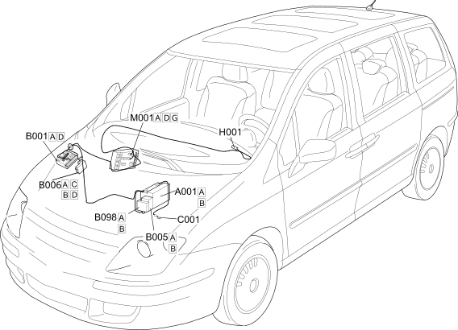

E1010 POWER SUPPLY SYSTEM COMPONENT LOCATION
- Path
- Electrical equipment > 1 ELECTRICAL FUNCTIONS > E10 POWER SUPPLY AND EARTHS > E1010 POWER SUPPLY > E1010 POWER SUPPLY SYSTEM COMPONENT LOCATION
- Kind
- topic
- Applies to
- engines: 2.0 16V JTD, 2.2 16V JTD; all production periods; only with equipment: MY 2005
- Interactive page
- https://sloeber94.github.io/elrnDB-fUlss/en/#/179002450
Applies to: engines: 2.0 16V JTD, 2.2 16V JTD; all production periods; only with equipment: MY 2005

Component code | Description | Reference to the assembly |
|---|---|---|
BATTERY | ||
ENGINE COMPARTMENT JUNCTION UNIT | ||
MAXI FUSE BOX | - | |
ADDITIONAL FUSE BOX | - | |
BATTERY EARTH | - | |
Ignition switch | ||
BRAKE PEDAL SWITCH | ||
BODY COMPUTER |